Difference-in-differences Designs
When researchers have pretreatment measurements of the outcome and the mediator, they can use the difference-in-differences (DID) approach to estimating controlled direct effects of DID-CDEciteTKTK. This approach can take full advantage of doubly robust estimation as with other models.
Generally speaking, the DID approach and the selection-on-observable approach are very similar, with a few differences. First, the outcome should represent a difference between the pretreatment and posttreatment measurements of the outcome. Second, one must specify the name of the variable measuring the pretreatment values of the mediator since the estimates will be conditional on this variable. Third, there are two different quantities of interest in this setting that can be estimated, depending on what one wants to condition on and what assumptions one wants to make.
In this article, we demonstrate the estimation of CDEs in the DID
setting using data from the field experiment of BKciteTKTK. This
experiment consisted of one baseline survey (t0) and four
posttreatment surveys (t1 through t4). In the
experiment, the authors randomly assigned an door-to-door intervention
to either engage in a conversation promoting transgender rights
(treated == 1) or a control conversation about recycling
(treated == 0). Our goal is to estimate the direct effect
of this treatment fixing values of posttreatment subjective feelings
about transgender people (therm_trans_t2, measured in wave
2). The outcome of interest is support for a transgender
nondiscrimination law (nondiscrim_law_t3, measured in wave
3). Baseline covariates consist of several survey measures (labeled with
t0) and several variables from the matched voter file
(labeled vf). These baseline measures include pretreatment
measurements of the mediator (therm_trans_t0) and the
outcome (nondiscrim_law_t0). For purposes of estimation, we
will use the difference between the pre and posttreatment outcomes
(nondiscrim_law_diff) as the outcome in the models below.
We measure intermediate confounders at from wave 1
(t1).
We can see a brief view of the data below:
## ── Attaching core tidyverse packages ──────────────────────── tidyverse 2.0.0 ──
## ✔ dplyr 1.1.4 ✔ readr 2.1.5
## ✔ forcats 1.0.0 ✔ stringr 1.5.1
## ✔ ggplot2 3.5.1 ✔ tibble 3.2.1
## ✔ lubridate 1.9.3 ✔ tidyr 1.3.1
## ✔ purrr 1.0.2
## ── Conflicts ────────────────────────────────────────── tidyverse_conflicts() ──
## ✖ dplyr::filter() masks stats::filter()
## ✖ dplyr::lag() masks stats::lag()
## ℹ Use the conflicted package (<http://conflicted.r-lib.org/>) to force all conflicts to become errors
library(DirectEffects)
data(transphobia)
transphobia## # A tibble: 501 × 19
## treated nondiscrim_law_t3 therm_trans_t2 therm_obama_t1 gender_norm_moral_t1
## <dbl> <dbl> <dbl> <dbl> <dbl>
## 1 0 1 0 71 -2
## 2 1 3 2 100 0
## 3 0 NA NA NA NA
## 4 1 0 1 100 0
## 5 0 1 1 0 -1
## 6 0 1 1 74 0
## 7 1 2.5 NA 100 1
## 8 1 NA NA 100 0
## 9 1 NA NA NA NA
## 10 1 NA NA NA NA
## # ℹ 491 more rows
## # ℹ 14 more variables: nondiscrim_law_t0 <dbl>, therm_trans_t0 <dbl>,
## # therm_obama_t0 <dbl>, gender_norm_moral_t0 <dbl>, ideology_t0 <dbl>,
## # religious_t0 <dbl>, exposure_trans_t0 <dbl>, pid_t0 <dbl>,
## # vf_democrat <dbl>, vf_female <dbl>, vf_hispanic <dbl>, vf_black <dbl>,
## # vf_age <dbl>, nondiscrim_law_diff <dbl>Specifying conditioning sets
One key step in estimating CDEs is to specify the covariates that we
will condition on for each propensity score and outcome regression. We
can specify in the relevant call to treat_model or
outreg_model, but it is often useful to define the formulas
separately (perhaps to use them in several different models).
## Propensity score model for treatment
ps_t_mod <- treated ~ therm_trans_t0
## Propensity score model for treatment
ps_m_mod <- therm_trans_t2 ~ treated + therm_trans_t0 + gender_norm_moral_t0 +
therm_obama_t0 + vf_democrat + vf_female + vf_black + vf_hispanic +
gender_norm_moral_t1 + therm_obama_t1
## Outcome models for treatment (short regression)
or_t_mod <- nondiscrim_law_diff ~ treated + therm_trans_t0 +
gender_norm_moral_t0 + therm_obama_t0 + vf_democrat + vf_female +
vf_black + vf_hispanic
## outcome model for mediator (long regression)
or_m_mod <- nondiscrim_law_diff ~ treated + therm_trans_t0 + therm_trans_t2 +
gender_norm_moral_t0 + therm_obama_t0 + vf_democrat + vf_female + vf_black +
vf_hispanic + gender_norm_moral_t1 + therm_obama_t1Here, the propensity score model for treatment only includes the baseline mediator as treatment is randomly assigned. For the outcome regression for treatment, we do include baseline covariates for efficiency reasons. For the mediator models, we include baseline and intermediate covariates.
Estimating the ACDE
We now turn to estimation. The main building block for the DID
approach is the cde_did_aipw() function. Like the other
cde_aipw() function, there is the trim
argument that trims the propensity score weights to keep estimates more
stable and the aipw_blip which is a logical that indicates
whether the estimator should use a doubly-robust estimator for the
intermediate “blipped-down” regression functions.
There are several arguments unique to the DID setting. First, the
base_mediator argument specifies what variable in the data
frame will contain the baseline (that is, pretreatment) mediator. The
estimates will be conditional on this variable so it should be discrete.
Second, the on_treated logical argument indicates if the
estimand should further be conditional on being treated and having a
constant value of the mediator over time.
Below we specify the entire chain of estimators, using
multinom for the mediator because it has three levels
(feeling cool, neutral, and warm toward transgender people).
out_dr_ml <- cde_did_aipw(base_mediator = therm_trans_t0, trim = c(0.01, 0.99)) |>
set_treatment(treated) |>
treat_model(engine = "logit", ps_t_mod) |>
outreg_model(engine = "lm", or_t_mod, separate = FALSE) |>
set_treatment(therm_trans_t2) |>
treat_model(engine = "multinom", ps_m_mod, separate = FALSE, include_past = FALSE) |>
outreg_model(engine = "lm", or_m_mod, separate = FALSE, include_past = FALSE) |>
estimate(nondiscrim_law_diff ~ treated, data = transphobia, n_folds = 5)Notice that we have set include_past to
FALSE for the mediator models because we have explicitly
included those covariates in our model specifications. In addition, we
use the difference between posttreatment and pretreatment outcomes as
the depedent variable in this specification.
Using the default on_treated == FALSE implies that we
are estimating what DIDCDEciteTKTK calls the baseline
conditional ACDE or ACDE-BC. We can view the output from these,
with all of the ACDE-BCs using summary(). This also
displays the marginalized ACDE-BC that averages the conditional effects
over the distribution of the baseline mediator.
summary(out_dr_ml)##
## did_aipw CDE Estimator
## ---------------------------
## Causal variable: treated
##
## Treatment model: treated ~ therm_trans_t0
## Treatment engine: logit
##
## Outcome model: ~treated + therm_trans_t0 + gender_norm_moral_t0 + therm_obama_t0 + vf_democrat + vf_female + vf_black + vf_hispanic
## Outcome engine: lm
## ---------------------------
## Causal variable: therm_trans_t2
##
## Treatment model: therm_trans_t2 ~ treated + therm_trans_t0 + gender_norm_moral_t0 + therm_obama_t0 + vf_democrat + vf_female + vf_black + vf_hispanic + gender_norm_moral_t1 + therm_obama_t1
## Treatment engine: multinom
##
## Outcome model: ~treated + therm_trans_t0 + therm_trans_t2 + gender_norm_moral_t0 + therm_obama_t0 + vf_democrat + vf_female + vf_black + vf_hispanic + gender_norm_moral_t1 + therm_obama_t1
## Outcome engine: lm
## ---------------------------
## Cross-fit: TRUE
## Number of folds: 5
##
## Estimated Effects:
## Estimate Std. Error t value Pr(>|t|) CI Lower
## treated [(1, 0) vs. (0, 0)] -1.0250 0.7024 -1.459 0.148844 -2.4252
## treated [(1, 1) vs. (0, 1)] 1.0047 0.3665 2.741 0.006936 0.2799
## treated [(1, 2) vs. (0, 2)] 0.3450 0.2606 1.324 0.187467 -0.1697
## treated [(1, *) vs. (0, *)] 0.2963 0.2561 1.157 0.247929 -0.2072
## CI Upper DF
## treated [(1, 0) vs. (0, 0)] 0.3752 72
## treated [(1, 1) vs. (0, 1)] 1.7294 138
## treated [(1, 2) vs. (0, 2)] 0.8596 159
## treated [(1, *) vs. (0, *)] 0.7999 369Here we can see that there is a statistically significant ACDE-BC for
the neutral group (m = 1), but not for the cool or warm groups. One can
also use the tidy() function from the
broom package to easily extract information:
tidy(out_dr_ml)## term estimate std.error statistic
## treated_1_0 treated [(1, 0) vs. (0, 0)] -1.0249682 0.7023920 -1.459254
## treated_1_1 treated [(1, 1) vs. (0, 1)] 1.0046603 0.3665254 2.741039
## treated_1_2 treated [(1, 2) vs. (0, 2)] 0.3449523 0.2605758 1.323808
## treated_1_* treated [(1, *) vs. (0, *)] 0.2963301 0.2560696 1.157225
## p.value conf.low conf.high df
## treated_1_0 0.14884448 -2.4251610 0.3752246 72
## treated_1_1 0.00693566 0.2799283 1.7293923 138
## treated_1_2 0.18746696 -0.1696839 0.8595885 159
## treated_1_* 0.24792906 -0.2072087 0.7998689 369This allows for easy plotting of the results using ggpplot2:
tidy(out_dr_ml) |>
ggplot(aes(x = term, y = estimate)) +
geom_pointrange(aes(ymin = conf.low, ymax = conf.high)) +
geom_hline(yintercept = 0, linetype = "dashed", color = "red") +
theme_minimal()
Setting on_treated to TRUE, on the other
hand, estimates the path-conditional ACDE or ACDE-PC.
out_dr_ml_pc <- cde_did_aipw(base_mediator = therm_trans_t0, on_treated = TRUE,
trim = c(0.01, 0.99)) |>
set_treatment(treated) |>
treat_model(engine = "logit", ps_t_mod) |>
outreg_model(engine = "lm", or_t_mod, separate = FALSE) |>
set_treatment(therm_trans_t2) |>
treat_model(engine = "multinom", ps_m_mod, separate = FALSE, include_past = FALSE) |>
outreg_model(engine = "lm", or_m_mod, separate = FALSE, include_past = FALSE) |>
estimate(nondiscrim_law_diff ~ treated, data = transphobia, n_folds = 5)
summary(out_dr_ml_pc)##
## did_aipw CDE Estimator
## ---------------------------
## Causal variable: treated
##
## Treatment model: treated ~ therm_trans_t0
## Treatment engine: logit
##
## Outcome model: ~treated + therm_trans_t0 + gender_norm_moral_t0 + therm_obama_t0 + vf_democrat + vf_female + vf_black + vf_hispanic
## Outcome engine: lm
## ---------------------------
## Causal variable: therm_trans_t2
##
## Treatment model: therm_trans_t2 ~ treated + therm_trans_t0 + gender_norm_moral_t0 + therm_obama_t0 + vf_democrat + vf_female + vf_black + vf_hispanic + gender_norm_moral_t1 + therm_obama_t1
## Treatment engine: multinom
##
## Outcome model: ~treated + therm_trans_t0 + therm_trans_t2 + gender_norm_moral_t0 + therm_obama_t0 + vf_democrat + vf_female + vf_black + vf_hispanic + gender_norm_moral_t1 + therm_obama_t1
## Outcome engine: lm
## ---------------------------
## Cross-fit: TRUE
## Number of folds: 5
##
## Estimated Effects:
## Estimate Std. Error t value Pr(>|t|) CI Lower
## treated [(1, 0) vs. (0, 0)] -0.1465 0.5205 -0.2815 0.77912 -1.18413
## treated [(1, 1) vs. (0, 1)] 0.6810 0.3125 2.1793 0.03101 0.06311
## treated [(1, 2) vs. (0, 2)] 0.3436 0.1827 1.8810 0.06180 -0.01718
## treated [(1, *) vs. (0, *)] 0.3724 0.2016 1.8474 0.06549 -0.02399
## CI Upper DF
## treated [(1, 0) vs. (0, 0)] 0.8911 72
## treated [(1, 1) vs. (0, 1)] 1.2990 138
## treated [(1, 2) vs. (0, 2)] 0.7044 159
## treated [(1, *) vs. (0, *)] 0.7688 369